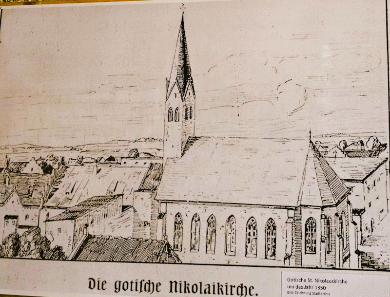
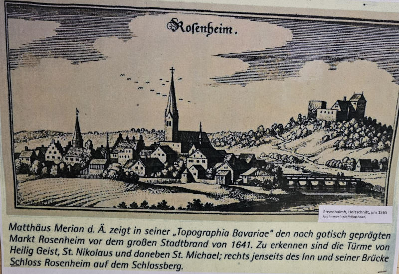
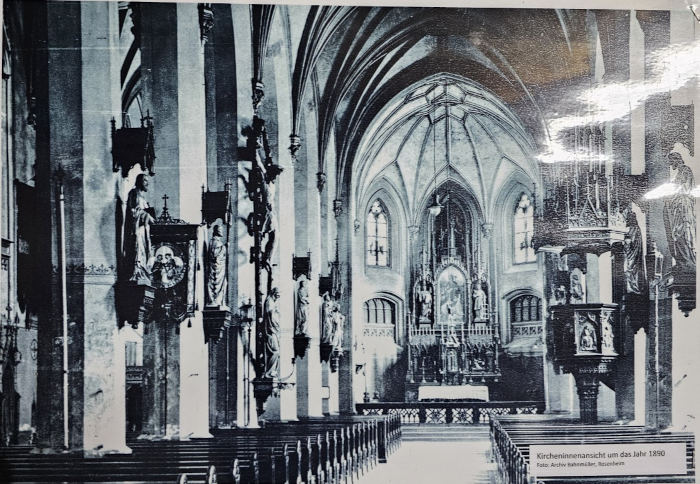
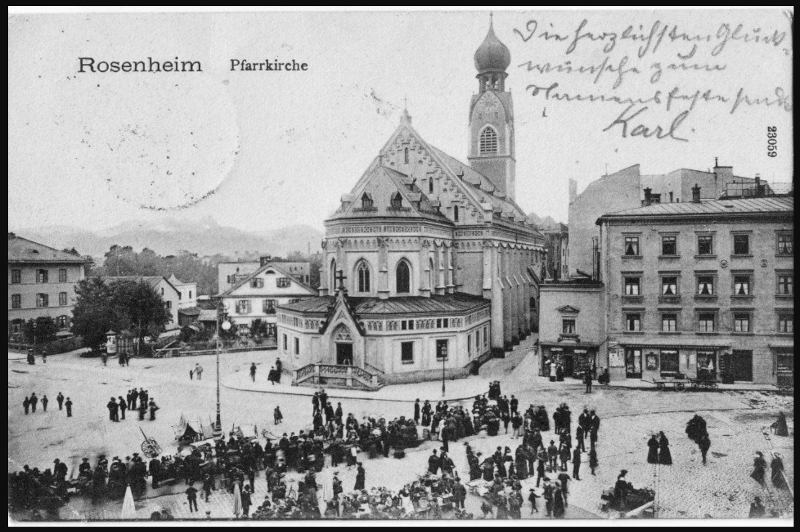
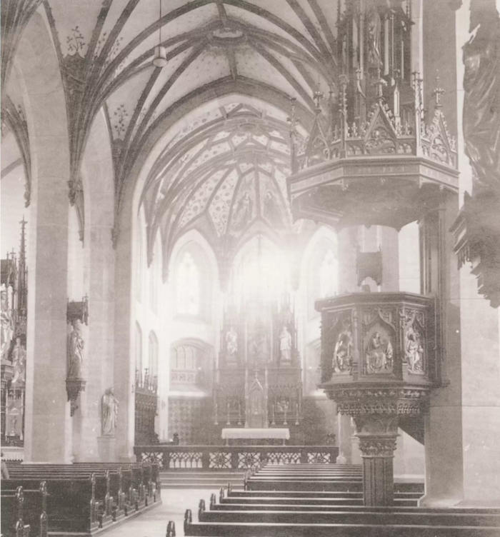
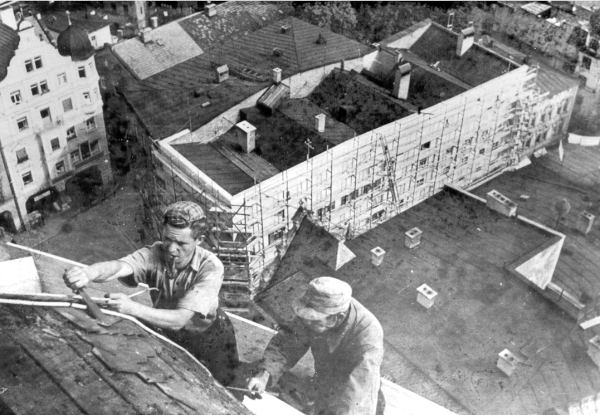
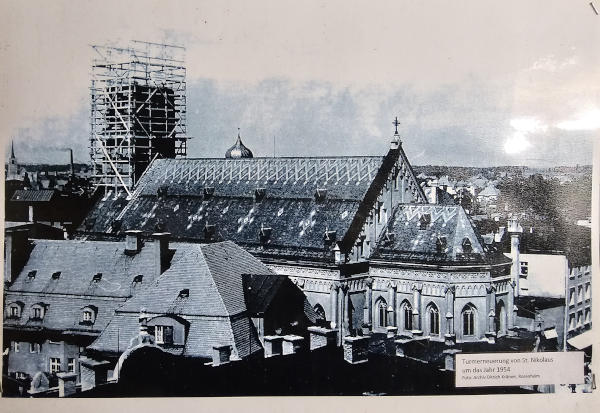
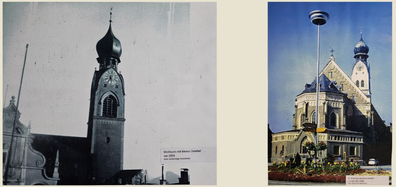
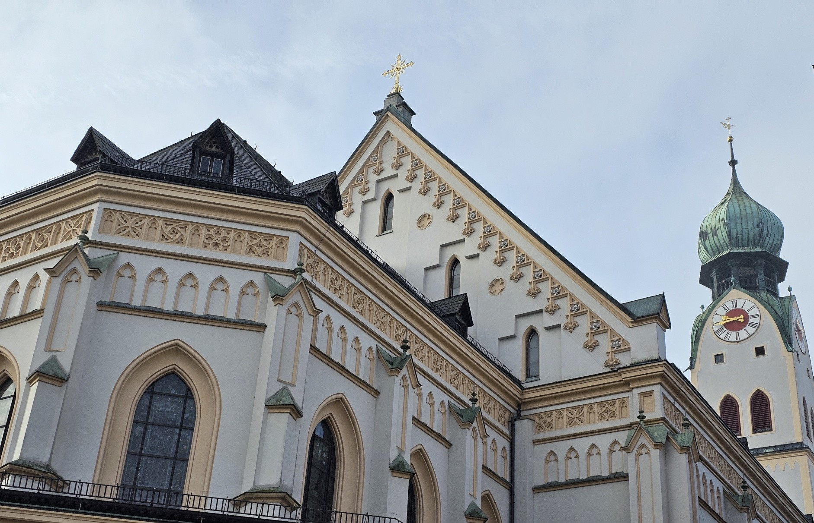

Historical Photographs of
St. Nikolaus Church and Tower
1300–1500s

1350 - Earliest available record showing the Gothic church structure.
1600s - 1700s

1655 - Matthäus Merian’s illustration after the great city fire of 1641.
1800s

Late 1800s - Exterior view during the growing town period.
1900s

1912 - “Green market” in front of the church.

1928 - Interior view following early renovations.
1950s–60s

1954 - Major renovation to stabilize the tower structure. Courtesy: Stadtarchiv, Rosenheim.

Late 1900s - Renovation: Dismantling the tower. New build will increase the dome size.

1960 - Church after completion of major renovation works.
Modern times (2000 and onwards)

Feeling curious? Book a tour and witness the legend of St. Nikolaus Church.
Available only from Easter Sunday to the end of October, every year.